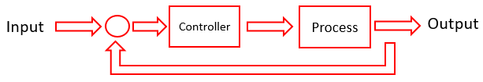
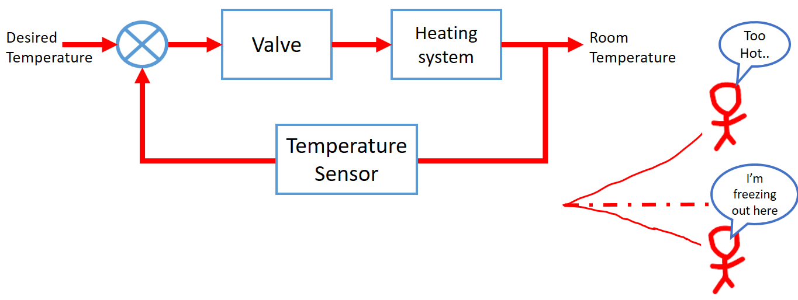
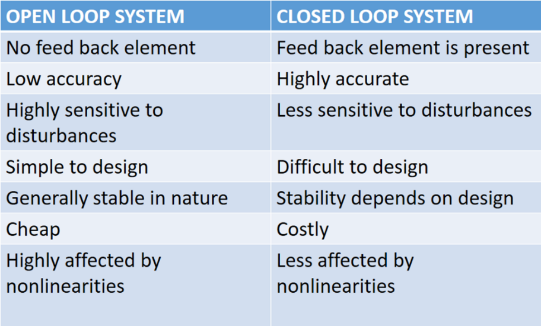

HOME BLOG EBOOKS ABOUT CONTACT SHOP
A Closed loop system is a system in which the output has a bearing on the control mechanism of the system. In a Closed loop system, an actuating error signal, which is the difference between the input signal and the output signal (in some form, not always directly) is fed to the controller. It is this error signal that drives the system. If the output of the system falls lower than the desired value, the corresponding error signal ensures that the output rises to the desired value and if the output rises above the desired value, its corresponding error signal makes the output decrease to the desired value. This way the output is always scrutinized and the corrections are made automatically.

A Home heating system is an example of a Closed loop system. When the temperature is above the desired value, an error signal is generated and the valve is actuated to bring the temperature down to desired value. Similarly, it automatically raises the temperature, when it’s too cold.

Something to be noted is that, it is not always possible, sometimes not desirable to feed back the available output signal directly. Depending on the nature of the controller and the plant, it may be required to attenuate it, amplify it, or sometimes even change its nature (to digital etc.). This changed input is called the reference input. While the Closed loop systems have much more desirable properties than its counterpart, they do have some undesirable properties. Firstly, with all the complexity, designing these systems is a challenge in itself. But the critical area where they lose out to the Open loop systems is stability. One might have figured, that with the self-correcting nature of these systems, they are far more stable. But the problem is that these systems have a tendency to over correct the errors and that may overtime lead to oscillations. The problem of stability is a severe one and must be taken care of in the design stages (which again adds complexity in designing).
